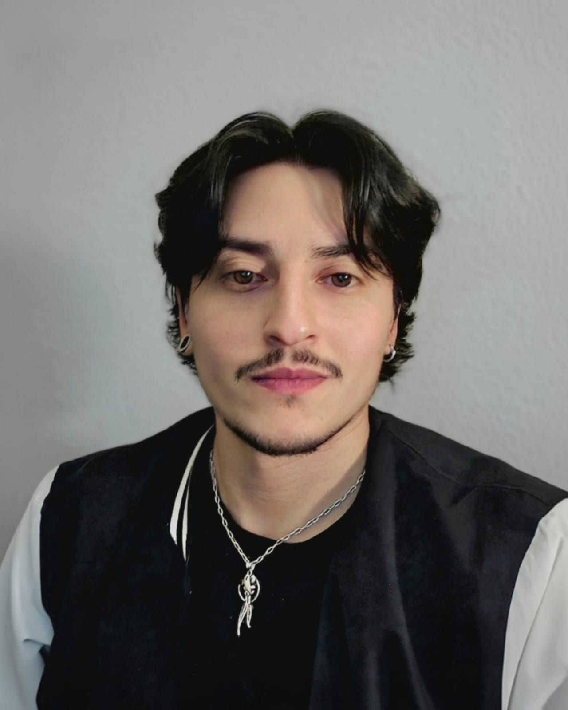

My name is
Nicolás Moreno.
I'm a self-taught engineer who left a physics degree to build software full-time from a small city in southern Chile. I think of my work the way an astronomer thinks of the night sky: most of what matters is invisible until you build the thing that lets you see it.
Three projects I'm building right now.
FIDELYA — The Customer Intelligence OS for the physical world
Multi-tenant SaaS that captures the real behavior of in-person consumers and turns it into predictive retention through AURA, a proprietary AI engine I built from scratch. Sixty+ modules in production. Real paying customers. Currently raising a seed round. CEO & CTO.
GoAuto — Dealership software, rebuilt from first principles
Tech Lead at a Dropout Capital company building the best software ever made for auto dealerships. International team spanning LATAM and the US. Full-stack engineering, architecture decisions, and product leadership.
Entropía Technologies — My research lab and home base
The Chilean SpA I co-founded in 2023. A small team building software products and running a research lab focused on analytical models and neural networks. It's where experimental work lives before it earns its way into a real product.

T+ 4 years since first deployment
How I ended up here.
I grew up in Santiago and got into the Physics Engineering program at Universidad Andrés Bello in 2019. I loved physics for one specific reason: it's the only discipline I've ever met that treats "I don't know yet" as a starting point rather than a failure. That stuck with me.
Then the pandemic happened, and the classroom stopped being a classroom. I moved to Valdivia — rain, rivers, long quiet mornings — and started writing software full-time. Not because I had lost faith in the university, but because the world was moving too fast to wait for a diploma, and I needed to learn the way I learn best: by building things and watching what happens.
Since 2022 I've been writing software full-time — self-taught, obsessive about craft, allergic to things that don't work. I've shipped products for clients in Pittsburgh, co-founded two companies, and spent the last year building FIDELYA from $0: every line of backend, every pixel of UI, every deployment. Not because I'm proving anything, but because that's how I understand a system — by holding all of it in my head at once.
What I care about is clear: science — the real kind, not the hype. Technology that respects the people using it. The small café and the 200-store franchise treated with the same intelligence. A physical world that doesn't quietly become a logistics route for online giants. And learning — obsessively, every day, forever.
The path that brought me here.
Four years full-time writing software. Three companies. One unfinished physics degree. Zero regrets.
Tech Lead · Full-Stack Developer
Leading product and architecture on a new category of auto dealership software. International team, fast iteration, real users from day one.
CEO & CTO · Cofounder
Customer Intelligence OS for brick-and-mortar retail. Multi-tenant SaaS, 60+ modules, proprietary AI engine. Currently raising seed.
CEO & Cofounder
Chilean SpA building software products and running a research lab. The umbrella company where all my experimental work lives.
Full-Stack Developer
Seven months as full-stack engineer on a US-based contract. First international client engagement and a lot of lessons about writing production code for someone else.
UX/UI Designer
Before writing a single line of production code, I spent two years designing interfaces. I taught myself Figma, shipped my first client work, and learned something that still defines how I work: the hardest part of good software isn't the code — it's understanding what people actually need.
Physics Engineering (incomplete)
Three years of physics engineering. Left during the pandemic to move south and build software full-time. Still read physics papers on weekends.
If you're building something strange and real, let's talk.
I'm always open to conversations with people working on hard problems at the intersection of science, software, and the physical world. The weirder the better.